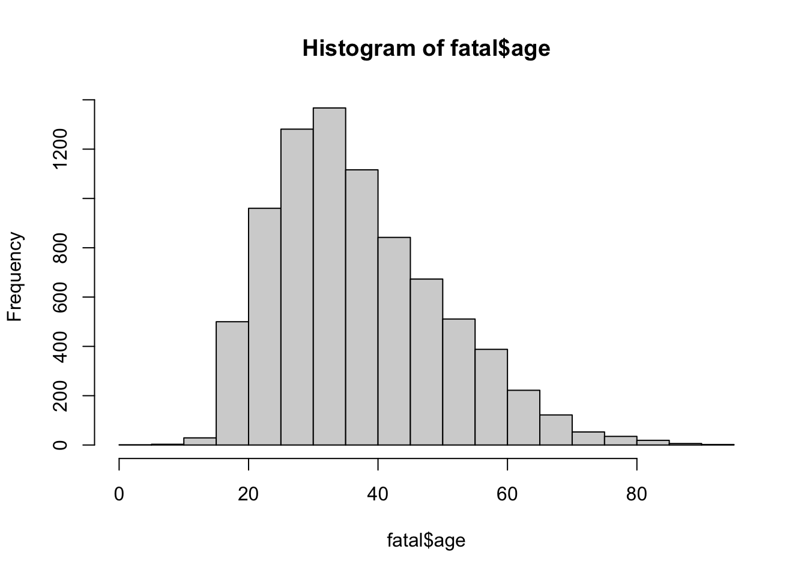
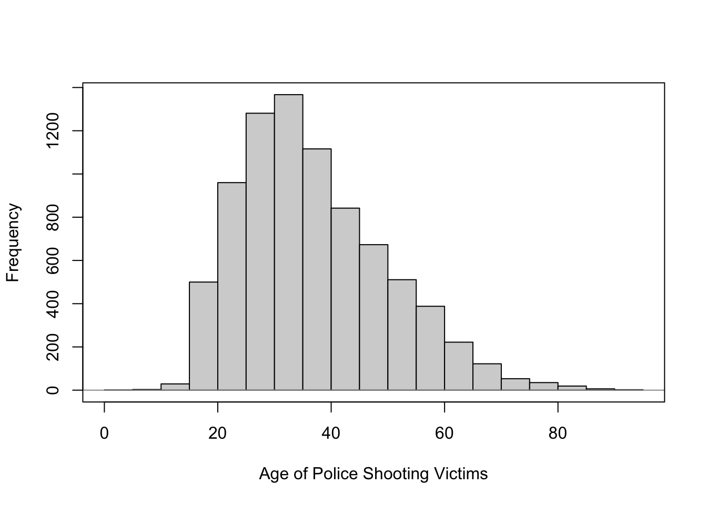
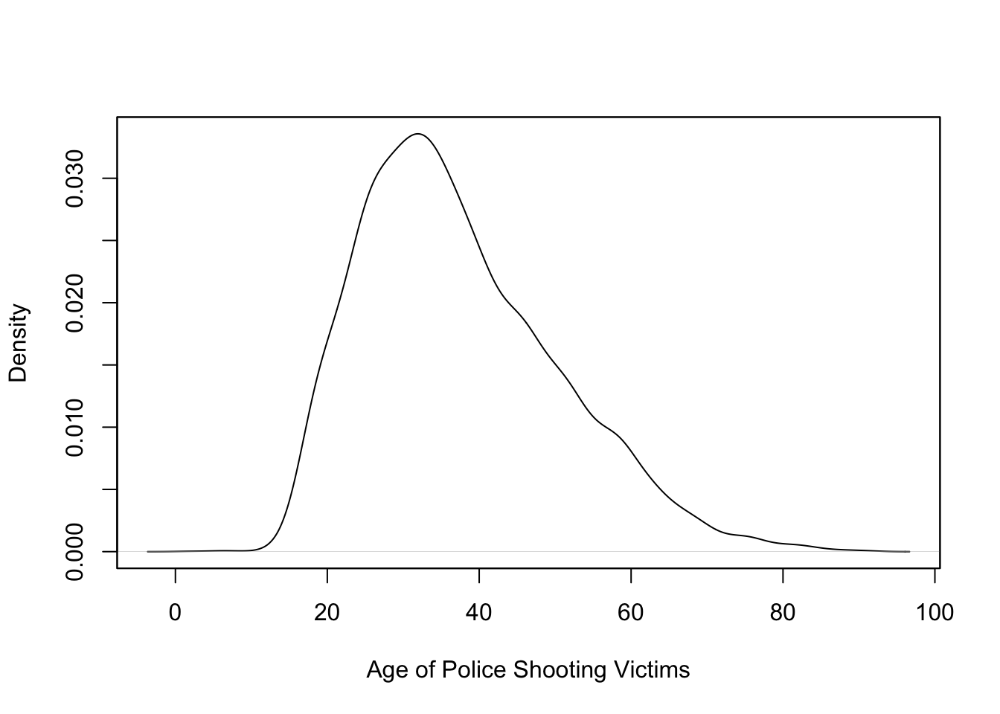
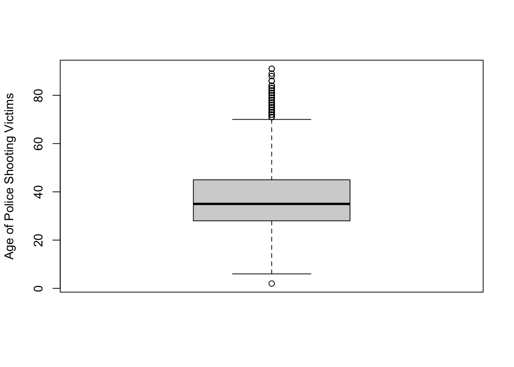
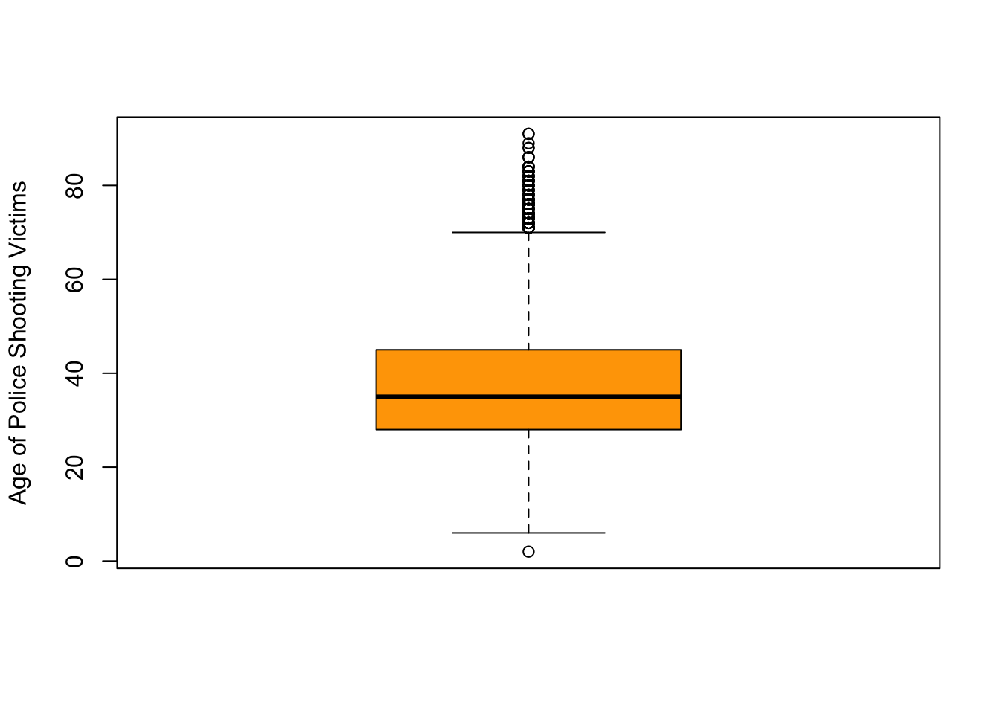
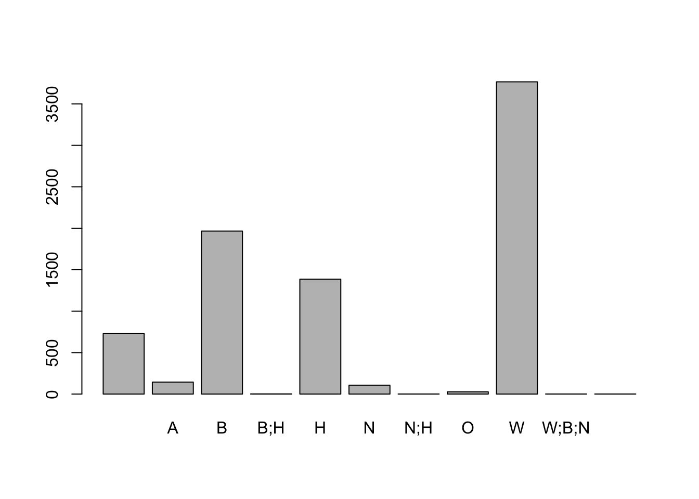
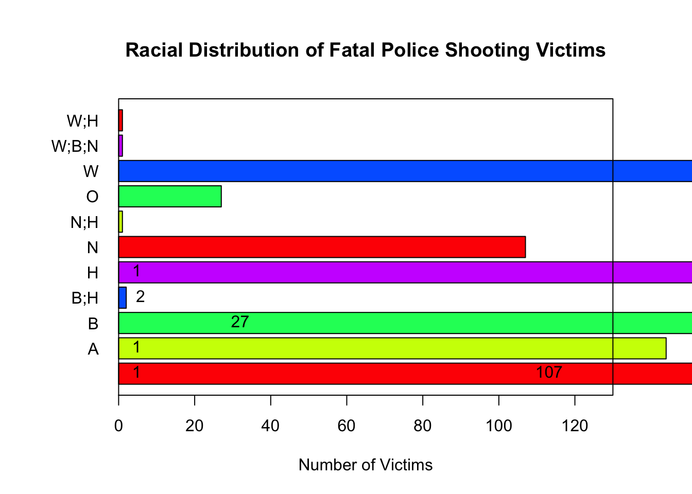

rm(list=ls())Fatal Force
Written by Nathan Alexander and Hye Ryeon Jang
Introduction
The Fatal Force branch project is one of the core data explorations for our lab members.
We are integrating a critical modeling theory (CMT) with a few different data sets to develop a database that will allow our current and future lab members to answer questions about racialized systems, history, and policing at various levels.
Here, we offer introductory code used to welcome new members to our lab. Shout out to new members!
Task 0: Preliminaries
Before any data tasks, you will need to develop a practice to developing your expertise for our project. The best way to do this is to progressively build your understanding of the research literature in this area. Please take 5 minutes to read through a new annotation here.
Task 1: Launch a new project
First, we’ll generate a new project. Please open your RStudio IDE.
Navigate to the following: File > New Project
A new window will open. In this new window, you will need to name your project. As a group, we decided to name the project `fatalv2’ (thanks, Kyshan!) since we will be analyzing the second version of the fatal force data set.
Task 1-a: Clear objects from your envioronment
Task 2: Load your packages
If you haven’t already, you’ll need to load the tidyverse package.
install.packages("tidyverse", repos = "http://cran.us.r-project.org")Task 3: Load your libraries
We will use a set of specific libraries in the packages that we just loaded. In the tidyverse package, there are some libraries that we’ll need to bring in our data as a .csv file; so we’ll load the entire library.
library(tidyverse)Task 4: Import your data
Please navigate to the website for the raw code that we’ll bring into R.
We want to bring data directly in from the github repository
This data is from the GitHub for Washington Post[^1]. [^1]: https://github.com/washingtonpost
# import your data using the read.csv command
fatal_raw <- read.csv("https://raw.githubusercontent.com/washingtonpost/data-police-shootings/master/v2/fatal-police-shootings-data.csv")Task 5: View your data
fatal <- as_tibble(fatal_raw)
fatal# A tibble: 10,430 × 19
id date threat_type flee_status armed_with city county state latitude
<int> <chr> <chr> <chr> <chr> <chr> <chr> <chr> <dbl>
1 3 2015-01… point not gun Shel… Mason WA 47.2
2 4 2015-01… point not gun Aloha Washi… OR 45.5
3 5 2015-01… move not unarmed Wich… Sedgw… KS 37.7
4 8 2015-01… point not replica San … San F… CA 37.8
5 9 2015-01… point not other Evans Weld CO 40.4
6 11 2015-01… attack not gun Guth… Logan OK 35.9
7 13 2015-01… shoot car gun Chan… Maric… AZ 33.3
8 15 2015-01… point not gun Assa… Saline KS 38.7
9 16 2015-01… accident not unarmed Burl… Des M… IA 40.8
10 17 2015-01… point not replica Knox… Alleg… PA 40.4
# ℹ 10,420 more rows
# ℹ 10 more variables: longitude <dbl>, location_precision <chr>, name <chr>,
# age <int>, gender <chr>, race <chr>, race_source <chr>,
# was_mental_illness_related <chr>, body_camera <chr>, agency_ids <chr>Task 5-a: View the top of your data using the head function
head(fatal)# A tibble: 6 × 19
id date threat_type flee_status armed_with city county state latitude
<int> <chr> <chr> <chr> <chr> <chr> <chr> <chr> <dbl>
1 3 2015-01-… point not gun Shel… Mason WA 47.2
2 4 2015-01-… point not gun Aloha Washi… OR 45.5
3 5 2015-01-… move not unarmed Wich… Sedgw… KS 37.7
4 8 2015-01-… point not replica San … San F… CA 37.8
5 9 2015-01-… point not other Evans Weld CO 40.4
6 11 2015-01-… attack not gun Guth… Logan OK 35.9
# ℹ 10 more variables: longitude <dbl>, location_precision <chr>, name <chr>,
# age <int>, gender <chr>, race <chr>, race_source <chr>,
# was_mental_illness_related <chr>, body_camera <chr>, agency_ids <chr>Task 5-a: Change the observations viewed by adding n to head function
head(fatal, n=10)# A tibble: 10 × 19
id date threat_type flee_status armed_with city county state latitude
<int> <chr> <chr> <chr> <chr> <chr> <chr> <chr> <dbl>
1 3 2015-01… point not gun Shel… Mason WA 47.2
2 4 2015-01… point not gun Aloha Washi… OR 45.5
3 5 2015-01… move not unarmed Wich… Sedgw… KS 37.7
4 8 2015-01… point not replica San … San F… CA 37.8
5 9 2015-01… point not other Evans Weld CO 40.4
6 11 2015-01… attack not gun Guth… Logan OK 35.9
7 13 2015-01… shoot car gun Chan… Maric… AZ 33.3
8 15 2015-01… point not gun Assa… Saline KS 38.7
9 16 2015-01… accident not unarmed Burl… Des M… IA 40.8
10 17 2015-01… point not replica Knox… Alleg… PA 40.4
# ℹ 10 more variables: longitude <dbl>, location_precision <chr>, name <chr>,
# age <int>, gender <chr>, race <chr>, race_source <chr>,
# was_mental_illness_related <chr>, body_camera <chr>, agency_ids <chr>Task 5-b: View the bottom of your data using the tail function
tail(fatal)# A tibble: 6 × 19
id date threat_type flee_status armed_with city county state latitude
<int> <chr> <chr> <chr> <chr> <chr> <chr> <chr> <dbl>
1 11282 2024-12-… shoot "car" gun Indi… Marion IN 39.8
2 11283 2024-12-… undetermin… "" knife Sacr… Sacra… CA 38.5
3 11284 2024-12-… threat "foot" gun Orla… Orange FL 28.6
4 11286 2024-12-… undetermin… "" unknown West… Davis UT 41.1
5 11285 2024-12-… threat "not" gun Chat… Hamil… TN 35.0
6 11287 2024-12-… attack "" knife Celi… Mercer OH 40.5
# ℹ 10 more variables: longitude <dbl>, location_precision <chr>, name <chr>,
# age <int>, gender <chr>, race <chr>, race_source <chr>,
# was_mental_illness_related <chr>, body_camera <chr>, agency_ids <chr>Task 5-b: Change the observations viewed by adding n to tail function
tail(fatal, n=10)# A tibble: 10 × 19
id date threat_type flee_status armed_with city county state latitude
<int> <chr> <chr> <chr> <chr> <chr> <chr> <chr> <dbl>
1 11289 2024-12… attack "car" unarmed Lore… Crosby TX 33.7
2 11271 2024-12… undetermin… "" undetermi… Belc… Rolet… ND NA
3 11275 2024-12… threat "" gun Wood… Los A… CA 34.2
4 11276 2024-12… undetermin… "" undetermi… Spok… Spoka… WA 47.7
5 11282 2024-12… shoot "car" gun Indi… Marion IN 39.8
6 11283 2024-12… undetermin… "" knife Sacr… Sacra… CA 38.5
7 11284 2024-12… threat "foot" gun Orla… Orange FL 28.6
8 11286 2024-12… undetermin… "" unknown West… Davis UT 41.1
9 11285 2024-12… threat "not" gun Chat… Hamil… TN 35.0
10 11287 2024-12… attack "" knife Celi… Mercer OH 40.5
# ℹ 10 more variables: longitude <dbl>, location_precision <chr>, name <chr>,
# age <int>, gender <chr>, race <chr>, race_source <chr>,
# was_mental_illness_related <chr>, body_camera <chr>, agency_ids <chr>Task 6: Get a summary of your data
summary(fatal) id date threat_type flee_status
Min. : 3 Length:10430 Length:10430 Length:10430
1st Qu.: 2912 Class :character Class :character Class :character
Median : 5752 Mode :character Mode :character Mode :character
Mean : 5721
3rd Qu.: 8527
Max. :11295
armed_with city county state
Length:10430 Length:10430 Length:10430 Length:10430
Class :character Class :character Class :character Class :character
Mode :character Mode :character Mode :character Mode :character
latitude longitude location_precision name
Min. :19.50 Min. :-160.01 Length:10430 Length:10430
1st Qu.:33.45 1st Qu.:-111.95 Class :character Class :character
Median :36.06 Median : -94.19 Mode :character Mode :character
Mean :36.63 Mean : -96.86
3rd Qu.:40.04 3rd Qu.: -83.12
Max. :71.30 Max. : -67.87
NA's :1140 NA's :1141
age gender race race_source
Min. : 0.00 Length:10430 Length:10430 Length:10430
1st Qu.:28.00 Class :character Class :character Class :character
Median :35.00 Mode :character Mode :character Mode :character
Mean :37.46
3rd Qu.:45.00
Max. :92.00
NA's :372
was_mental_illness_related body_camera agency_ids
Length:10430 Length:10430 Length:10430
Class :character Class :character Class :character
Mode :character Mode :character Mode :character
Task 7: Get a glimpse of your data
glimpse(fatal)Rows: 10,430
Columns: 19
$ id <int> 3, 4, 5, 8, 9, 11, 13, 15, 16, 17, 19, 21, …
$ date <chr> "2015-01-02", "2015-01-02", "2015-01-03", "…
$ threat_type <chr> "point", "point", "move", "point", "point",…
$ flee_status <chr> "not", "not", "not", "not", "not", "not", "…
$ armed_with <chr> "gun", "gun", "unarmed", "replica", "other"…
$ city <chr> "Shelton", "Aloha", "Wichita", "San Francis…
$ county <chr> "Mason", "Washington", "Sedgwick", "San Fra…
$ state <chr> "WA", "OR", "KS", "CA", "CO", "OK", "AZ", "…
$ latitude <dbl> 47.24683, 45.48742, 37.69477, 37.76291, 40.…
$ longitude <dbl> -123.12159, -122.89170, -97.28055, -122.422…
$ location_precision <chr> "not_available", "not_available", "not_avai…
$ name <chr> "Tim Elliot", "Lewis Lee Lembke", "John Pau…
$ age <int> 53, 47, 23, 32, 39, 18, 22, 35, 34, 47, 25,…
$ gender <chr> "male", "male", "male", "male", "male", "ma…
$ race <chr> "A", "W", "H", "W", "H", "W", "H", "W", "W"…
$ race_source <chr> "not_available", "not_available", "not_avai…
$ was_mental_illness_related <chr> "True", "False", "False", "True", "False", …
$ body_camera <chr> "False", "False", "False", "False", "False"…
$ agency_ids <chr> "73", "70", "238", "196", "473", "101", "19…Task 8: Get the dimensions of your data
dim(fatal)[1] 10430 19Task 9: Select a numeric varaible to get a summary
summary(fatal$age) Min. 1st Qu. Median Mean 3rd Qu. Max. NA's
0.00 28.00 35.00 37.46 45.00 92.00 372 Take note of the missing values. This tells us we need to clean up our data a bit.
Task 10: Drop missing values over the entire data set
fatal <- na.omit(fatal)
summary(fatal$age) Min. 1st Qu. Median Mean 3rd Qu. Max.
0.00 28.00 35.00 37.42 45.00 91.00 Task 11: Take another look at your data
What main differences do you notice in the summary of your data?
summary(fatal) id date threat_type flee_status
Min. : 3 Length:8987 Length:8987 Length:8987
1st Qu.: 2580 Class :character Class :character Class :character
Median : 5283 Mode :character Mode :character Mode :character
Mean : 5461
3rd Qu.: 8448
Max. :11295
armed_with city county state
Length:8987 Length:8987 Length:8987 Length:8987
Class :character Class :character Class :character Class :character
Mode :character Mode :character Mode :character Mode :character
latitude longitude location_precision name
Min. :19.50 Min. :-160.01 Length:8987 Length:8987
1st Qu.:33.45 1st Qu.:-111.93 Class :character Class :character
Median :36.09 Median : -94.17 Mode :character Mode :character
Mean :36.67 Mean : -96.78
3rd Qu.:40.09 3rd Qu.: -83.06
Max. :71.30 Max. : -67.87
age gender race race_source
Min. : 0.00 Length:8987 Length:8987 Length:8987
1st Qu.:28.00 Class :character Class :character Class :character
Median :35.00 Mode :character Mode :character Mode :character
Mean :37.42
3rd Qu.:45.00
Max. :91.00
was_mental_illness_related body_camera agency_ids
Length:8987 Length:8987 Length:8987
Class :character Class :character Class :character
Mode :character Mode :character Mode :character
Task 12: Get a tabular summary of a logic variable
table(fatal$body_camera)
False True
7395 1592 Task 13: Get a tabular summary of a categorical variable
table(fatal$gender)
female male non-binary
4 410 8568 5 Task 14: Create a histogram of the age variable
hist(fatal$age)
Task 15: Improve your histogram with some addtiional code
hist(fatal$age,
xlab = "Age of Police Shooting Victims",
main = "")
abline(h = 0, col = "gray60")
box()
Task 16: View a density plot of the age variable
plot(density(fatal$age),
xlab = "Age of Police Shooting Victims",
main = "")
box()
Task 17: View a boxplot of the age varaible
boxplot(fatal$age,
ylab = "Age of Police Shooting Victims")
Task 18: Make a fancier boxplot
boxplot(fatal$age,
ylab = "Age of Police Shooting Victims",
col = "orange")
Task 19: Create a table of a qualitative variable
race <- table(fatal$race)
barplot(race)
Group task: Lets work on fixing this chart together
par(mar=c(5, 6, 5, 4))
barplot(race,
horiz = T,
xlim = c(0,130),
las = 1,
main = "Racial Distribution of Fatal Police Shooting Victims",
xlab = "Number of Victims",
col = rainbow(5))
text(x=race,
y=c(0.7, 1.9, 3.1, 4.3, 5.5),
labels = paste(race), pos = 4)
box()